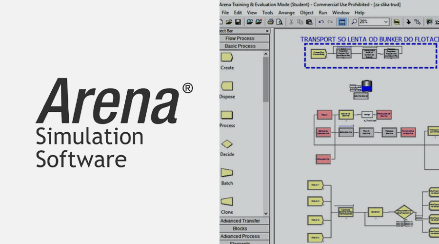

Metodoloji
Başarılı bir proje tamamlaması için, başlangıçtan bitişe kadar iyi yapılandırılmış ve önceden belirlenmiş bir eylem planını takip etmek esastır. Süreç boyunca kullanılan metodoloji aşağıdaki gibi özetlenmiştir.
Sezgisel Yöntemler
Sezgisel yöntemler, üretim, montaj hatları ve süreç iyileştirme gibi çeşitli alanlarda karşılaşılan karmaşık sorunları ve zorlukları ele almak için kullanılan bir dizi teknik ve yaklaşımdır. Bu yöntemler, kapsamlı bir analiz için sınırlı bilgi veya zamanın olduğu durumlarda özellikle kullanışlıdır ve verimlilik ile üretkenliği artırmak için değerli içgörüler ve çözümler sunabilir.
Montaj hatları ve üretim bağlamında, sezgisel yöntemler Zaman Etüdü, Süreç Akış Analizi ve Tesis Düzenleme Planlaması gibi diğer metodolojilerle birlikte uygulanabilir. Bu, potansiyel verimsizliklerin ve darboğazların belirlenmesine ve ele alınmasına yardımcı olur.
Zaman Etüdü
İlk aşama, ana montaj hattındaki faaliyetleri gözlemlemek ve kaydetmek için yapılandırılmış bir yöntem olan Zaman Etüdü’nü içerir. Bu çalışma, her bir göreve harcanan zamanı ölçerek mevcut operasyonların detaylı bir şekilde anlaşılmasını ve potansiyel verimsizliklerin belirlenmesini amaçlar. Sistematik veri toplama ve analiz yoluyla, bu metodoloji iyileştirme gerektiren alanların belirlenmesi ve süreçlerin düzene sokulması için bir temel sağlar. Proje için seçilen yöntem, iş süreçlerinin optimizasyonu, kaynak planlaması ve performans değerlendirmesinde özellikle üretim ve süreç endüstrilerinde faydalı olan MTM (Methods-Time Measurement) yöntemidir.
Yerleşim Yeri Planlaması
Verimli tesis düzenleme planlaması, atıkları en aza indirmek, hareketi azaltmak ve projelerde iş akışını optimize etmek için çok önemlidir. Bu metodoloji, çalışma alanlarının ve ekipmanların düzenlenmesinde sistematik bir yaklaşım gerektirir ve genellikle planlama aşamasında zaman etüdü metodolojilerinden yararlanır. Belirli görevleri yerine getirmek için gereken zamanı hassas bir şekilde analiz eden zaman etüdlerinden elde edilen içgörülerle, organizasyonlar tesis içindeki dinamikleri daha iyi anlar. Bu bilgi, montaj hattındaki faaliyet akışını iyileştirmek için iş istasyonlarının ve malzemelerin stratejik olarak yerleştirilmesine olanak tanır ve daha verimli bir üretim sürecine katkıda bulunur.
Yalın Üretim
Proje, aşırı üretim, bekleme süresi ve gereksiz taşıma gibi verimsizlikleri belirleyip çözerek israfı azaltmayı stratejik olarak hedefleyen Yalın Üretim prensiplerine bağlıdır. Üretim sürecinin tamamını görsel olarak temsil eden ve iyileştirmeye hazır alanları belirlemek için akışını düzenleyen güçlü bir araç olan Değer Akış Haritalama (Value Stream Mapping) kullanılmaktadır. Sürekli iyileştirme uygulamalarına olan bağlılık, düzenli geri bildirim ve aşamalı iyileştirmeler kültürü oluşturur, sürekli ilerlemeyi sağlar.
Hataları ve kusurları önlemek için Poka-Yoke uygulaması, ürün kalitesini artırmaya katkıda bulunur. Aynı zamanda, Müşteri talebine göre üretimi destekleyen Tam Zamanında Üretim (Just-In-Time) fazlalık stokları azaltır. Ergonomiye odaklanarak ve çalışan katılımını teşvik ederek, proje montaj hattını iyileştirmeyi amaçlar, daha verimli bir iş akışı ve tamamlanan bileşenlerin günlük çıktısında artış sağlar. Yalın üretim prensiplerini kapsamlı bir şekilde uygulayarak, proje sadece operasyonları düzenlemeyi değil, aynı zamanda genel verimliliği ve ürün kalitesini artırmayı hedefler.
Yalın Üretim prensiplerinden kaynaklanan sürekli iyileştirmeleri uygulamak için organizasyonlar Kaizen Etkinlikleri düzenler. Bu etkinlikler, belirli sorunları ele almak veya aşamalı iyileştirmeler yapmak için odaklanmış, kısa vadeli projeleri içerir. Düzenli olarak Kaizen Etkinliklerine katılarak, organizasyonlar sürekli iyileştirme kültürü yaratır, değişen taleplere uyum sağlar ve montaj hattı süreçlerini sürekli olarak optimize eder.
Simülasyon Modelleme
Simülasyon Modelleme, uygulama öncesinde kontrollü bir sanal ortamda düzen değişikliklerini planlamak için kullanılır. Bu metodoloji, önerilen düzen değişikliklerinin etkilerini simüle etmeye ve analiz etmeye olanak tanır, kesinti riskini en aza indirir. Bir simülasyon programı içinde değişiklikleri görsel olarak temsil ederek, karar vericiler montaj hattı düzenini maksimum verimlilik ve üretkenlik için optimize eden bilinçli seçimler yapabilir.

Spagetti Diyagramı
Spagetti diyagramı, süreç iyileştirme kapsamında insan, malzeme veya bilginin bir sistem veya alan içinde akışını haritalamak ve analiz etmek için kullanılan görsel bir temsildir. Diyagram, düzen tasarımında verimsizlikleri, darboğazları ve iyileştirme alanlarını belirlemeye yardımcı olur. Avantajları, bir sürecin içindeki gerçek hareketi net bir şekilde görsel olarak anlamayı sağlayarak verimliliği optimize etmek için bilinçli kararları kolaylaştırmasıdır.